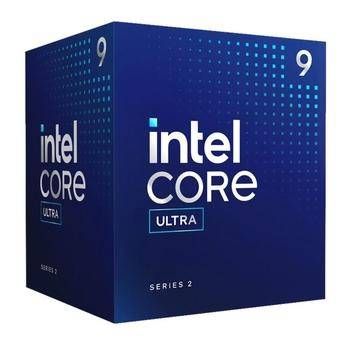

Intel Core Ultra 9 285, Intel Arc, 500GB SSD, 16GB RAM
Procesor - Intel Core Ultra 9 285
P-Core-Frekvence: 2.5 GHz
P-Core-Max Frekvence: 5.4 GHz
E-Core-Frekvence: 1.9 GHz
E-Core-Max Frekvence: 4.6 GHz
Počet Jader: 24
Počet Vláken: 24
L0-D: 48 KB (1 jádro)
L0-l: 64 KB (1 jádro)
L1 Casche: 192 KB (1 jádro)
L2 Casche: 3 MB (1 jádro)
L3 Casche: 36 MB
E-Core L1: 96 KB (1 jádro)
E-Core L2: 4 MB (1 modul)
TDP: 65 W
Max TDP: 182 W
Socket: Intel Socket 1851
Výrobní Technologie: 3 nm
Grafická Karta - Intel Arc
Počet Stream Procesorů: 4 Xe-Cores
Výrobní Technologie: 3nm
Architektura Čipu: Xe-LPG
Velikost VRAM: Sdílená systémová paměť
Typ Paměti: Sdílená systémová paměť
Šířka Sběrnice: Sdílená systémová paměť
Frekvence Jádra: 300 MHz
Frekvence Paměti: Sdílená systémová paměť
